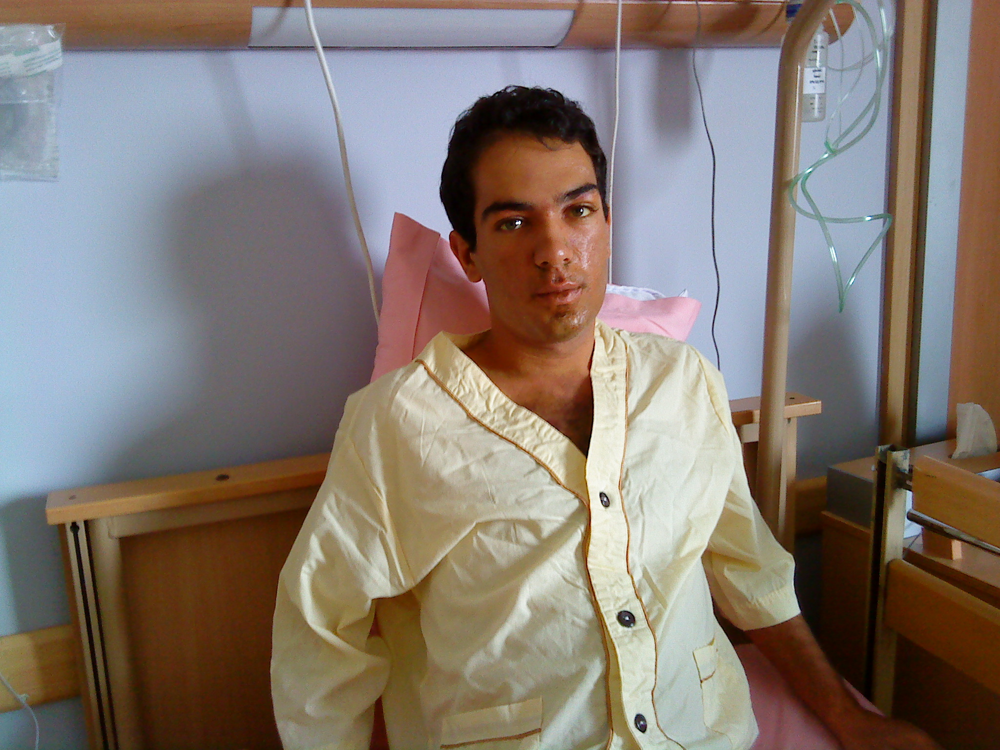
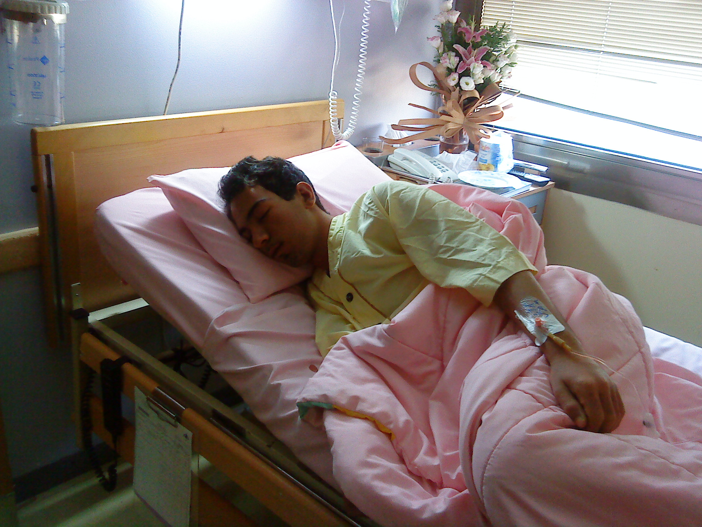

|
|
بیانیه مادران پارک لاله ایران(مادران عزادار) :جان و سلامتی زندانیان، پس از آزادی همچنان در خطر است!
شنبه6 شهریور 1389
از آنجائی که اغلب زندانیان آزاد شده به دلیل شکنجههای روحی- روانی- جسمی- جنسی، دچار بیماریهای عدیدهای شدهاند که حتی در برخی موارد منجر به مرگ آنان شده است، مادران پارک لاله (مادران عزادار) بر خود واجب دانسته، توجه خانوادههای زندانیان را به موارد تاسفباری که تاکنون اتفاق افتاده است جلب نمایند، تا برای بازگشت سلامتی زندانیان آزاد شده به ویژه جوانانی که تجربه کافی از خطرها و آثار شکنجه را ندارند، مساله بازگشت سلامتی جدی گرفته شود.

از اینرو از خانوادههای رنجکشیده زندانیان آزاد شده تقاضا میشود در اولین روزهای آزادی عزیزشان، آزمایشها و کنترلهای پزشکی کامل از تمام اعضای بدن بهخصوص کلیهها، کبد، مغز و اعصاب وی را به صورت جدی دنبال کنند تا تجربه به غایت تلخ فاجعه کهریزک(احمد نجاتی کارگر، با ۲۲ سال سن که سه روز پس از آزادی به دلیل از بین رفتن کلیهها به کما میرود و سپس جان میبازد) و موارد مشابه دوباره تکرار نشود.
با آرزوی سلامتی برای تمامی عزیزانمان و تاسف فراوان، چند نمونه زیر شایان ذکر است:
حسام ترمسی، جوان ۱۹ ساله که پس از تحمل یکسال حبس به علت بیماری کلیه و کبد و افسردگی شدید در بیمارستان بستری است.
نرگس محمدی، سخنگوی کانون مدافعان حقوق بشر و مادر دو طفل سه ساله که پس از آزادی از زندان، وضعیت روحی و جسمی اش رو به وخامت است و باید مجددا در بیمارستان بستری شود.
محبوبه کرمی، فعال جنبش زنان که به علت بیحرکتی نیمی از بدناش و افسردگی شدید در بیمارستان بستری شده است.

حمزه کرمی از فرماندهان سابق سپاه پاسداران که به علت شکنجه های جسمی و روحی در زندان اوین هم اکنون در بخش مراقبت های ویژه بیمارستانی بستری است .
این نمونهها مشتیست از خروار که بر سر فرزندان ما، آوار شده است. در حالیکه شکنجه در قوانین جمهوری اسلامی ایران ممنوع است و زندانی دارای حق و حقوقی قانونیست، اما گاه برای دستیابی به حداقل حقوق قانونی خود مجبور به اعتصاب غذا میشود. همانطور که شاهد بودیم ۱۷ نفر از بهترینهای ملت ایران اعتصاب غذایی طولانی را برای ابتداییترین حقوق خود تحمل کردند و ما همچنان سخت نگران عواقب اعتصاب غذای عزیزانمان و سلامتی آنان هستیم.
تاریخ نشان داده است این بیرحمیها و ظلمها بیپاسخ نخواهد ماند. ولی ما به عنوان مادر و خانواده زندانی در چنین شرایطی باید به سلامت عزیزانمان توجه کافی داشته باشیم و زمان را از دست ندهیم و تلاش کنیم تا فرزندان مان به سلامتی نسبی دست یابند، چرا که هرگز اثرات شکنجه به طور کامل از بین نخواهد رفت.
مادران پارک لاله (مادران عزادار)
۶ شهریور